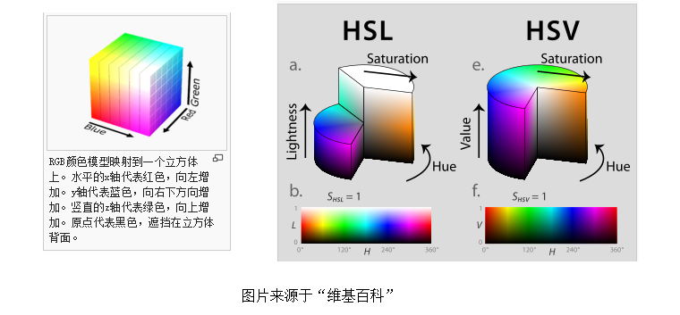
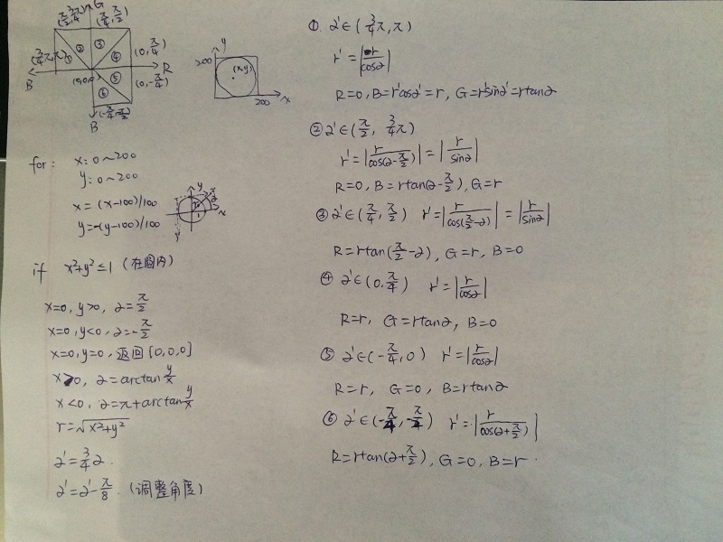
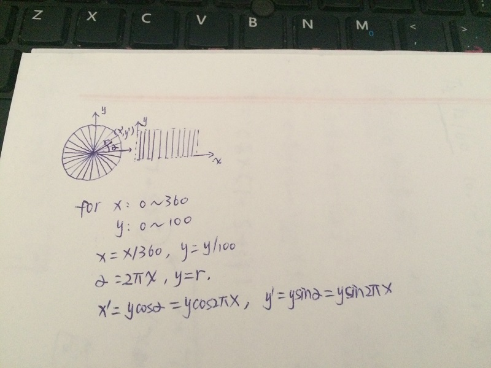

色盘
2016-01-15
偶然想做个页面的色彩效果，看了下色彩模式之类的，自己做个色盘好了，感觉挺炫酷的。
RGB颜色立方体比较直观，三个维度分别是红绿蓝，坐标值从0到255，黑色的坐标为(0,0,0),白色的坐标为(255,255,255)。将这个立方体以两种不同的方式投射为圆柱体，就是HSL和HSV色彩空间了。HSL和HSV色彩空间的轴心都是与颜色立方体的(0,0,0)与(255,255,255)两个点的连线相对应的，不同的是，HSL是以与上述连线垂直的平面不断切割立方体，再把每一个切割的点或面（除去(0,0,0)与(255,255,255)两个点外，切割的面都是正三角形）投影到一个圆上，再把所有的圆拼接在一起，而HSV是将以(0,0,0)(1,1,1)...(244,244,244)(255,255,255)等一系列的点作为顶点的三个互相垂直的面投影到圆上再拼接（相当于一层一层的剥开正方体，一次剥去三个面）。
最终html5的canvas画出来的效果如下：
可以看出我画的是HSV色彩空间色盘，色盘下的调节按钮调节的是明度值（Value），将这些色盘组合起来就是HSV色彩空间了。前面说到HSV是以一种一层一层的剥开正方体的方式来组合形成的，这样就有两种剥的方式了，从黑色(0,0,0)开始剥和从白色(255,255,255)开始剥，我所画的图中，上面的色盘是从黑色(0,0,0)剥开的，下面的色盘是从白色(255,255,255)剥开的。 具体的将三个面投影到一个圆上的方法见下图，再下面的图是将圆形投影到正方形的方法。
 详细代码见：github代码
此文感谢老公的鼎力帮助！！！